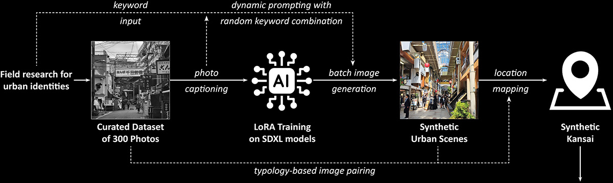

Synthetic Representation of Kansai Urbanism
The map locates 300 photos from my 2024 urban research across the Kansai region;
the photos are processed as AI training materials to embed local urban concepts into SDXL LoRA models.
Click the pins to see my local snapshots transforming into AI synthetic imaginaries;
the AI scenes are generated under loose control of dynamic prompting,
which randomly combines keywords from my photo captions (e.g. shopping arcade, train platform)
and my research notes (e.g. mixed-use, sustainable) to shape familiar-yet-fictional scenarios.
